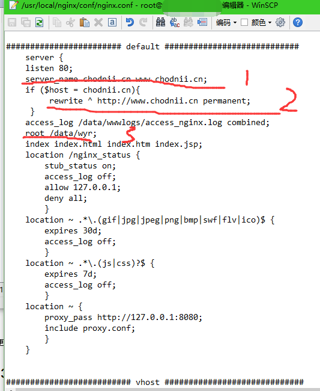
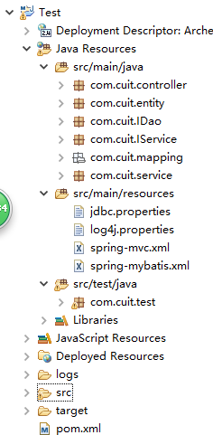
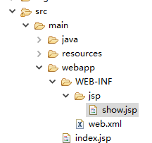
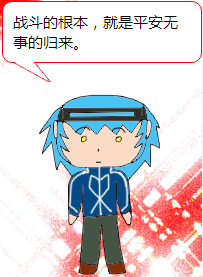

SSM后端到jquery前端
0 注意事项
以下内容是写给我自己看的，为了防止在毕业设计或者今后忘记怎么做。各位也可以参考学习我的经验，可以跟着一起，制作出像我所做的这个网站一样的，但不能保证您能做出来。Ssm你们甚至可以直接看http://blog.csdn.net/gebitan505/article/details/44455235就好。
具体地，很多问题您也只有百度，像暴龙教我的nginx套餐，他没做出来，我却做出来了。注意全体utf-8。
所需的部分东西在这https://yunpan.cn/cMb4C2GVUdMDG 访问密码 1dc8
1 ssm
1.1 什么是ssm？
SSM框架集由Spring、SpringMVC、MyBatis三个开源框架整合而成，常作为数据源较简单的web项目的框架。
其中spring是一个轻量级的控制反转（IoC）和面向切面（AOP）的容器框架。
SpringMVC分离了控制器、模型对象、分派器以及处理程序对象的角色，这种分离让它们更容易进行定制。
MyBatis是一个支持普通SQL查询，存储过程和高级映射的优秀持久层框架。
1.2 买腾讯云服务器
https://www.qcloud.com/act/campus中点击
获得64元的代金券及其域名，域名需要实名认证与云解析，云解析需要等一段时间才能生效，然后把域名放在/usr/local/nginx/conf里的nginx.conf。1处写域名，2处是强制转化，3处是我改过的展示前端的地址（或许tomcat还是哪里也要改，然而我记忆模糊了，各位遇到问题就去百度吧，实在不行就用默认的吧）。64代金券自己去买个65的就抵押了。

1.3 系统镜像
为了不自己搭建环境，可以选择服务市场的JAVA运行环境（CentOS7.1 64位 | Nginx | Tomcat7 | JDK多版本）。
1.4 访问云主机的工具
一个是暴龙推荐的SecureCRT Portable，对字符可复制可粘贴，不过问题是一段时间不使用就得重新连接了。另一个是WinSCP，可以愉快地对文件复制粘贴。用腾讯自带的不会自动断开，或者安装东西后用VNC的就去百度吧。
1.5 jsp的准备
下个最新版eclipse installer，然后安装jee版本。下载tomcat8文件夹放进去。mysql及其破解版的navicat也准备好。然后创建maven项目，该build的都build一下，然后放入云盘里的pom.xml，等着下或者repository拿来直接覆盖了。
然后展示下完成后的目录：

1.6 复制粘贴配置文件
复制粘贴用来连接数据库的配置文件jdbc.properties
复制粘贴用来完成spring和mybatis的整合的spring-mybatis.xml
复制粘贴日志配置文件log4j.properties
1.7 测试spring与mybatis整合成功没
自己好表，然后用mybatis-generator-core-1.3.2创建IDao、entity和mapping。generatorConfig.xml改好配置后，用cmd的java -jar mybatis-generator-core-1.3.2.jar -configfile generatorConfig.xml -overwrite创建出来，复制粘贴进eclipse。然后写IService和service。然后复制粘贴TestMyBatis.java，修改成自己的样式，就可以junit测试。
1.7 整合SpringMVC
复制粘贴spring-mvc.xml。
复制粘贴web.xml

建立show.jsp可以测试最后的整合。
UserController.java里就教会了各位jsp的正确使用方法。
1.8 jsonp之后端
虽然各位可以使用传说中的ssm了，但我们要前后分离。一下就是制造jsonp的关键代码
@Controller
@RequestMapping("/char")
public class CharTalkController {
@Resource
private ICharTalkService charTalkService;
@ResponseBody
@RequestMapping("/talk")
public JSONPObject jsonTalk(HttpServletRequest request, String callback) {
int id = Integer.parseInt(request.getParameter("id"));
CharTalk charTalk = this.charTalkService.getCharTalkById(id);
return new JSONPObject(callback, charTalk);
}
}
关键就在于这样写后，http://localhost:8080/Test/char/talk?id=16&callback=success就能给您提供16的id，然后使用您的jsp获取信息，返回success({"id":16,"content":"战斗的根本，就是平安无事的归来。","others":null})。
这里可以使用chrome的postman来使其更好看：

2 前端
2.1 jsonp之前端
Jquery与您的js文件的摆放问题这里就不说了。
前端要使用这个url的代码如下：
//根据id获取content
function charTalk(id) {
var content
$.ajax({
url: "http://localhost:8080/Test/char/talk?id=" + id,
type: "get",
async: false,
dataType: "jsonp",
jsonp: "callback", //服务端用于接收callback调用的function名的参数
jsonpCallback: "success_jsonpCallback", //callback的function名称,服务端会把名称和data一起传递回来
success: function(json) {
$("#person>.talk").html(json.content);
},
error: function() {
console.log('json出错');
}
});
}
记得url要把localhost改成公网ip，然后$("#person>.toy").click(function()……调用，success里就是获取成功后的动作，json.content就表示json对象的content属性的值。这，就是：

3 总结
看起来简单其实很困难，这期间遇到的很多困难让人焦头烂额，只有不断地百度，不断地尝试新的方法，然后达到目标。具体困难比如什么tomcat版本问题啊，navicat破解问题啊，maven下不下来啊，腾讯云服务器怎么用啊，vnc怎么用不起啊，secure怎么断了啊，winscp怎么复制不起啊，navicat怎么访问不了公网ip啊，防火墙在哪啊，怎么重启tomcat用不起了啊，防火墙怎么重启就报错了啊，tomcat怎么不让我重启了啊，怎么改了nginx默认页面没变啊，怎么地址栏写接口报错啊，啊啊，啊，太多了。所以各位只有去百度，才能完成自己的jsp，甚至是自己的ssm与您伟大的前端，更甚至是，您所熟悉的语言。期待您创造出比我更强大的网站！
-------------------------------------------------以下为抱怨-----------------------------------------------------------
如果各位不学会去百度，迟早会成为废人。各位感受下以下言语给人的情绪波动：
A：java很简单，我看完这本书我就精通java了
B：你来给我把这个乱码问题解决了
C：老子就是要用webstorm
D：你把你的代码给我
E：老子就是不用鼠标，触摸板是未来的发展趋势
F：老子问你啥子，你啥子都求不晓得
G：老子还以为div+css好鸡儿高级，结果就是html
H：以后发展的趋势是自动生成代码，所以老子才不写代码
I：老子跟到视频里面的做，怎么报错呢，这视频太鸡儿歪了
J：我一定要培训，学校学不到东西
K：这节课又是敲代码，点儿都没得意思
L：老师都没写，我怎么知道怎么写
M：我跟你一组，我就什么都不用做了
N：这些是组长的事，老子才不干呢
O：你来帮我把布局写了
P：你来帮我切图
Q：你干脆帮我做了
R：你会做为啥子要我来做
S：我闭到眼睛都可以做出来
T：你帮我改这个别人的项目
U：你帮我做毕业设计
V：你帮我写报告
W：你帮我拟定好答辩说什么
X：你帮我上课
Y：你帮我找工作
Z：你帮我活着
而您自己什么都不是，一味地依靠他人，而您去享受，那么您依靠的人，难道不去做自己喜欢做的吗？他不是人吗？他能帮您是因为他还有点同情您，给您点鱼，而有的时候给您渔的时候，您就不耐烦了。还不断地狂妄自大，同时不断地索取别人的劳动成果，当作是自己的。即使是做一件自己不喜欢的事情，但那件事情也是您的过去，以及您所期盼的未来同时造成的，而这件事的痛苦，己所不欲，勿施于人。我也曾傲慢过，自负过，但我也明白了这样做所表现出来的自己，不是真正的自己。真实的自己，应该是脚踏实地的，而不是没日没夜地过着虚无与幻想的生活。有困难可以寻求帮助，但不是寻求甘甜的果实，而是寻求播种的方法。